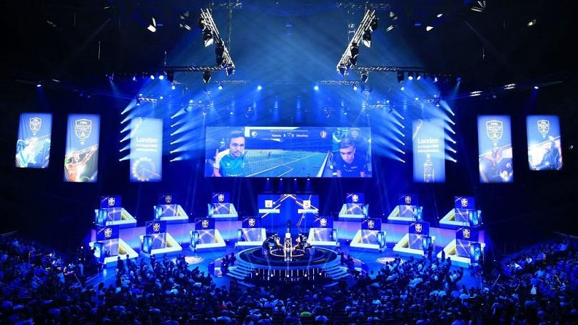
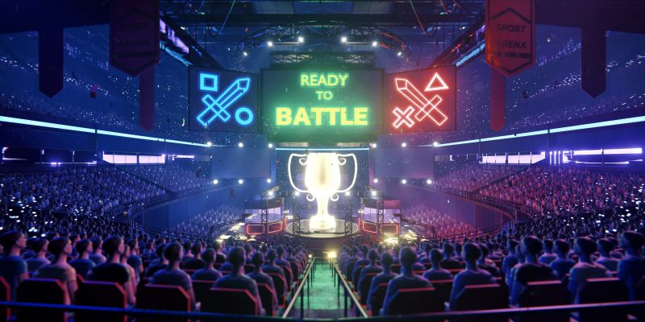
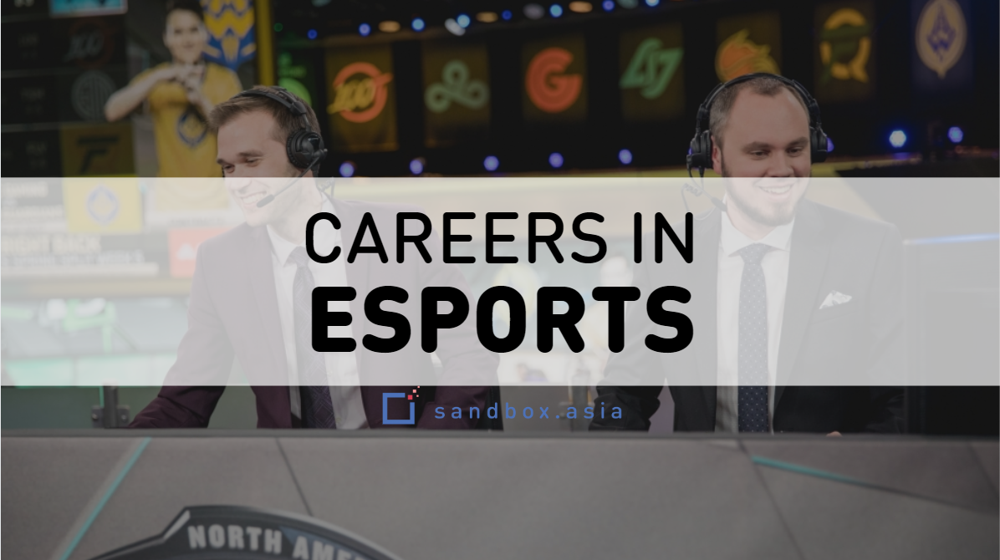
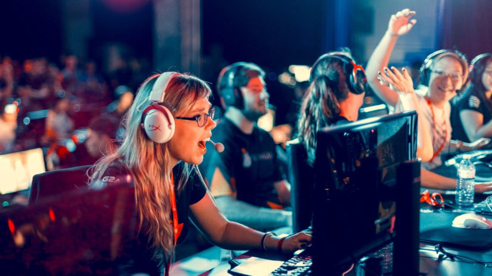
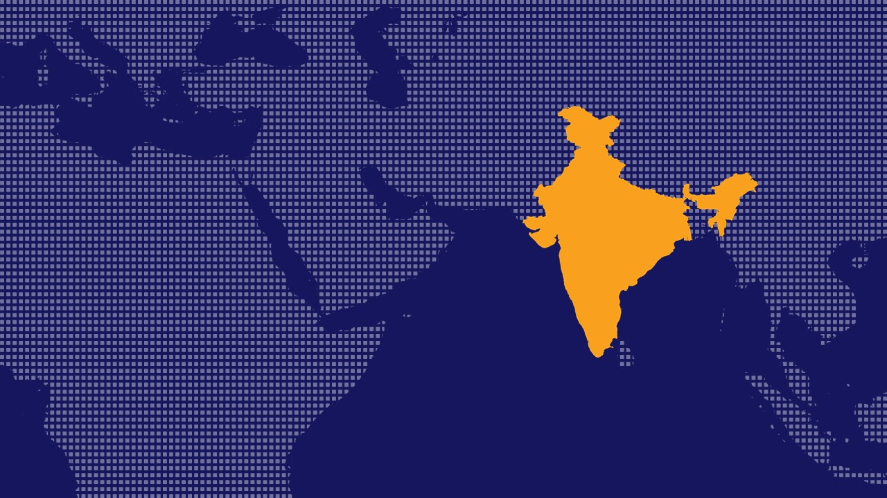

Esports (also known as electronic sports, e-sports, or eSports) is a form of sport competition using video games. Esports often takes the form of organized, multiplayer video game competitions, particularly between professional players, individually or as teams. Although organized competitions have long been a part of video game culture, these were largely between amateurs until the late 2000s, when participation by professional gamers and spectatorship in these events through live streaming saw a large surge in popularity. By the 2010s, esports was a significant factor in the video game industry, with many game developers actively designing and providing funding for tournaments and other events.
The most common video game genres associated with esports are multiplayer online battle arena (MOBA), first-person shooter (FPS), fighting, card games, battle royales, and real-time strategy (RTS). Popular esport franchises include League of Legends, Dota, Counter-Strike, Overwatch, Super Smash Bros., and StarCraft, among many others. Tournaments such as the League of Legends World Championship, Dota 2's International, the fighting game-specific Evolution Championship Series (EVO) and Intel Extreme Masters are among the most popular in esports. Many other competitions use a series of league play with sponsored teams, such as the Overwatch League. Although the legitimacy of esports as a true sporting competition remains in question, they have been featured alongside traditional sports in some multinational events in Asia, with the International Olympic Committee also having discussed their inclusion into future Olympic events.

Esports are also frequently played in tournaments, where potential players and teams vie to be placed through qualification matches before entering the tournament. From there, the tournament formats can vary from single or double elimination, sometimes hybridized with group stage. Esports tournaments are almost always physical events in which occur in front of a live audience, with referees or officials to monitor for cheating. The tournament may be part of a larger gathering, such as Dreamhack, or the competition may be the entirety of the event, like the World Cyber Games or the Fortnite World Cup. Esport competitions have also become a popular feature at gaming and multi-genre conventions

With rising interest in viewership of esports, some companies sought to create leagues that followed the franchise approach used in North American professional sports, in which all teams, backed by a major financial sponsor to support the franchise, participate in a regular season of matches to vie for top standing as to participate in the post-season games. This approach is more attractive for larger investors, who would be more willing to back a team that remains playing in the esport's premiere league and not threatened to be relegated to a lower standing. Though the details vary from league to league, these leagues generally require all signed player to have a minimum salary with appropriate benefits, and may share in the team's winnings. While there is no team promotion or relegation, players can be signed onto contracts, traded among teams, or let go as free agents, and new players may be pulled from the esports' equivalent minor league.
Esports As A Career

There are plenty of careers in eSports and gaming to choose from. If you love gaming, then you have a unique chance to pursue a career in the gaming industry.
Game designer: This is one of the most popular and competitive gaming industry jobs. A video game designer creates the game concept and designs the environment for interaction among players. Some of the typical tasks include the development of character biographies, storylines, role-play mechanics, missions, puzzles, challenges and more.
Software developer: A software developer in the gaming industry works closely with designers to convert their ideas into code and ensure the seamless performance of the video game. This position also requires experience with video games as a player, in order to have a solid understanding of the game structure and working principles.
Content writer: There are several types of writing jobs in gaming. Game content writers create scripts and stories as well as write speeches for the characters and dialogues between them. Technical writers are responsible for the game documentation and instructions. In some cases, they also write and edit user interface texts and labels.
Market researcher: The purpose of this position is to collect data that helps decide which products and services to sell, where and how to sell them, and how much to charge for them. The researchers conduct surveys among potential buyers in order to define their buying preferences and habits.
eSports athlete: An esports athlete is a professional gamer who signs a contract with an esports league team and participates in tournaments. A pro gamer should have extensive experience with the chosen game and train since childhood.
Girls in Esports

eSports is a space that has always been dominated by men…up until now, that is. While the world of gaming continues to grow at a rapid pace, it is evolving at the same time. Where eSports was once an industry dominated by men, almost 50% of all gamers in the world today are female. This reflects into the competitive sphere of gaming where women in eSports are gaining in popularity.
Gaming is certainly not what it used to be either. Virtual reality, as well as YouTube and Twitch gaming videos, have created a whole new dynamic and audience. These changes in the gaming space have been met with an influx of female gamers, a market that is expected to see considerable growth in the coming years.
Tournaments such as the Girl Gamer eSports Festival and the Supergirl Gamer Pro event have been drawing more attention to women in gaming, creating empowering environments that promote gender equality in an often male-dominated space.
eSporsts in India

Video gaming in India is an emerging market. As investments continue to rise, the video game market is expected to grow rapidly in India.
India is one of the top five mobile gaming markets in the world in terms of number of users. In FY 2019, online gaming in India was estimated at ₹6,200 crore market with an estimated 300 million gamers. Some popular video games in India = PUBG MOBILE,CALL OF DUTY ,FREE FIRE.
Currently, India stands at a global number 17 in the soon-to-be USD 1.5 billion Esports industry. Estimated to be about $818 million, the Indian Esports sector while vastly unstructured, is growing rapidly. The number of online gamers worldwide has increased from 20 million in 2010 to 250 million in 2018, whereas the number of game developing companies has grown from 25 in 2010 to 250 in 2018.
Global Esports has announced a partnership with USA based - Harrisburg University aiming to bridge the gap between collegiate and pro-esports across India and the world.As a part of this partnership, Global Esports has announced that it aims to make Harrisburg University’s Esports Degree including aspects such as faculty, lectures, assistance in curriculum, masterclasses and workshops accessible to India and the rest of Asia. The organization also states that it will follow this up with esport events and tournaments hosted for the university across India.
Global Esports will also help scout talent for Harrisburg University’s collegiate esports team.